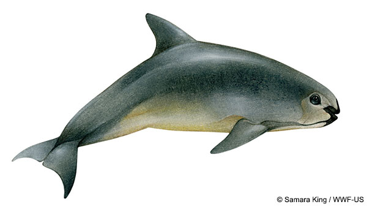
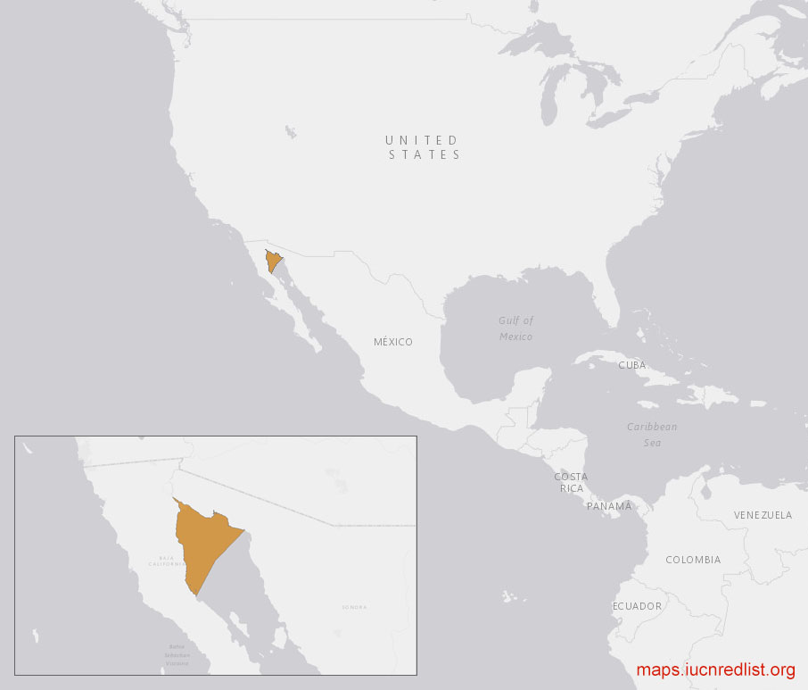
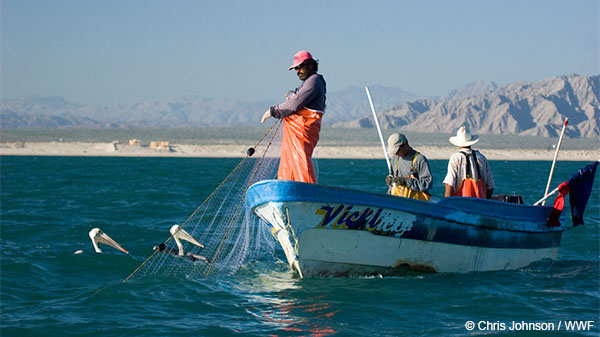
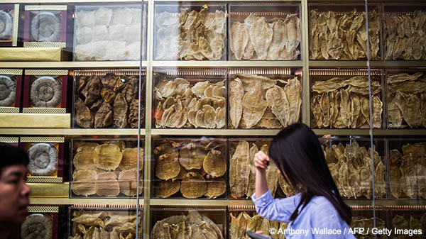
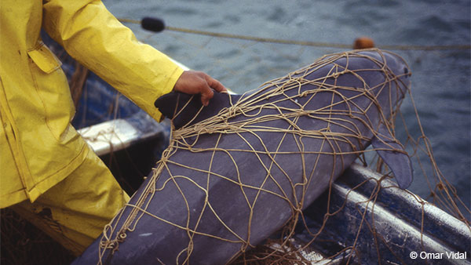
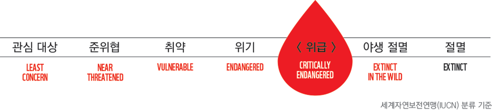
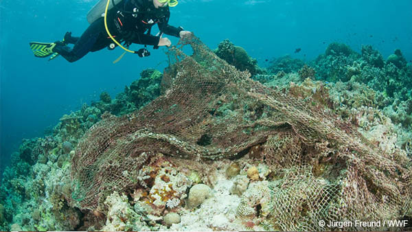

CIRVA (바키타 돌고래 보전을 위한 국제위원회)에 따르면, 2011년부터 야생에 남아 있는 바키타 돌고래 90%가 사라지고 겨우 30마리가 안 되는 개체수가 있다고 합니다.
– 바키타는 사람을 많이 경계하는 동물이기에 개체 수를 계산하기가 아주 어렵습니다 (90미터 이내에 다가갈수 없음).
겨우 음파탐지기를 이용 하여 그들이 내는 소리로 개체수를 산정하고 있지요.
바키타 돌고래를 본적이 있나요?
세상에서 가장 작은 돌고래 바키타는 현재까지 알려진 바로, 몸길이 1.5미터에 몸무게 45~50kg입니다.
바키타의 외모는 마치 판다 처럼 눈가에 검은 반점이 있고 입은 늘 웃고있는 모습이지요!
바키타의 등은 짙은 회색이며 옆면으로 밝은 회색과 흰색의 배를 갖고 있어요. 갓 태어난 새끼 바키타는 전체적으로 더 짙은 색을 띄고 있어요.

바키타 돌고래는 어디서 살고 있을까요?
바키타는 멕시코의 캘리포니아만 북쪽 끝에서만 주로 살아요.
바키타 외에도 캘리포니아만은 굉장히 생물학적 경제적 중요성을 가지고 있어요.
그 곳엔 많은 산호어 종류, 바다거북, 고래, 상어 같은 다양한 해양 생물들이 살고 있죠.

왜 바키타는 위험에 처했을까요?
바키타의 개체 수는 불가피하게 자망 어업 (눈에 보이지 않을 만큼 얇은 유령그물) 으로 인해 꾸준히 감소해 왔습니다.
작은 물고기와 새우를 잡기 위해 놓인 그물이 그들에게는 잘 보이지 않습니다. 그들이 그물속에서 헤어 나오지 못한 채 버둥거리다 그만 가라앉고 말지요.

토토아바와 같은 약재로 쓰이는 물고기를 불법 포획하는 과정에서 바키타는 또한 함께 희생됩니다.
토토아바의 부레는 1kg에 무려8,500달러까지 암시장에서 거래 된다고 합니다.

바키타 돌고래를 지키기 위한 지금까지의 노력
바키타의 개체수가 줄어 드는 것을 막기 위해 2005년 이후 멕시코 정부는 바키타가 사는 서식지에서 상업적인 어업을 금지 시키고 제재를 강화했습니다. 어민들에게 3천만 달러 이상을 들여 지속가능한 어업으로 방향 전환을 독려하고 보상도 했습니다. 또한 바키타의 개체 수, 번식률 및 서식지를 모니터링하기 위해 국제 과학 팀을 설립했습니다.
내셔널 지오그래픽은 바키타돌고래의 개체수가 1 년에 4 %씩 증가할 것으로 예상했으나 매년 18.5 %씩 감소하고 있다고 밝혔습니다.
감소의 원인은 모두 통제 불가능한 불법 어업이었습니다.

우리는 바키타를 보호하기 위해 무엇을 해야 할까요?
멕시코 대통령 엔리케 페냐 니에토는 바키타 보호를 선언했습니다.
그러나 바키타의 주요 위험인 토토아바 불법 어업의 계속적인 증가로 인해 바키타 수는 멸종위기 위급(CR)으로 떨어졌습니다.

바키타 보호를 위한 해결책은 캘리포니아만의 탁월한 국제적인 가치 보전과 불법 어획의 철저한 차단, 그리고 주민들의 관심을 끌어내는 것입니다.
